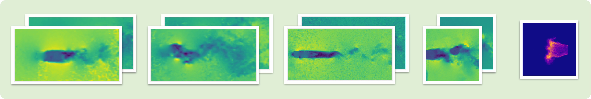
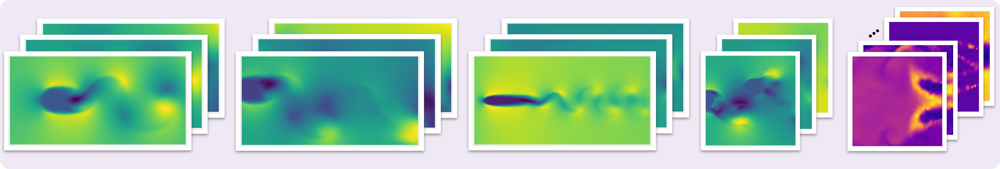

RealPDEBench:
Bridging the Sim-to-Real Gap
The first scientific ML benchmark with paired real-world and simulated data for complex physical systems
ICLR 2026 Oral (top 1.2%, scores ranking top 20/20000)

RealPDE Competition
$21,000 total prize pool across two tracks.
Real-World Experiments

CFD Simulations

The Challenge
Why Real-World Data Matters
Most scientific ML models are only validated on simulated data, creating a critical gap between theory and practice.
Numerical Errors
Discretization and modeling assumptions in CFD simulations
Measurement Noise
Camera sensors and particle tracking introduce real-world noise
Unmeasured Modalities
Pressure fields and 3D velocities cannot be fully measured
Benchmark Datasets
Five Physical Systems
Real Experiments + CFD Simulations
Click a dataset card to open the scenario page (data format, downloads, and examples).
FSI
Two-way fluid–structure interaction with cylinder vibration (vortex-induced vibration), spanning Re 3272–9068 across varying mass ratio and damping.
Controlled Cylinder
Active control via forced vibration (f 0.5–1.4 Hz, Re 1781–9843).
Cylinder
Stationary cylinder wake (Re 1800–12000) measured by PIV.
Foil
NACA0025 airfoil: 2D slices of 3D flow (AoA 0°–20°, Re 2968–17031).
Combustion
3D swirl-stabilized NH₃/CH₄/air flames captured with OH* chemiluminescence at 4000 fps. Large Eddy Simulation with 38 species and 184 reactions.
Benchmark
Baselines & Evaluation
Click a model or metric to open its detail page.
10 Baseline Models
Results Explorer
Explore Results
Baseline ranking on real-world test data, stratified by dataset and training paradigm.
Key Takeaways
Key Findings
Real data and simulation fail in different ways.
Simulation is cheap and information-rich, but imperfect.
Simulation-only training doesn't transfer cleanly to real tests.
Training on real data closes much of the gap.
Pretrain on simulation, finetune on real: best of both.
Pretraining saves updates.
Architectures trade off pointwise accuracy vs. global structure.
Long-horizon rollouts separate short-term wins from stable dynamics.
Resources
Reproducibility
Access datasets, baselines, and evaluation scripts to reproduce results and benchmark new models on paired experiments and CFD simulations.
If you find RealPDEBench useful in your research, please cite:
@inproceedings{hu2026realpdebench,
title={RealPDEBench: A Benchmark for Complex Physical Systems with Real-World Data},
author={Peiyan Hu and Haodong Feng and Hongyuan Liu and Tongtong Yan and Wenhao Deng and Tianrun Gao and Rong Zheng and Haoren Zheng and Chenglei Yu and Chuanrui Wang and Kaiwen Li and Zhi-Ming Ma and Dezhi Zhou and Xingcai Lu and Dixia Fan and Tailin Wu},
booktitle={The Fourteenth International Conference on Learning Representations},
year={2026},
url={https://openreview.net/forum?id=y3oHMcoItR},
note={Oral Presentation}
}